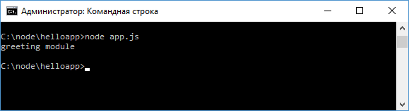

Модули
Node.js использует модульную систему. То есть вся встроенная функциональность разбита на отдельные пакеты или модули. Модуль представляет блок кода, который может использоваться повторно в других модулях. При необходимости мы можем подключать нужные нам модули. Какие встроенные модули есть в node.js и какую функциональность они предоставляют, можно узнать из документации. Для загрузки модулей применяется функция require(), в которую передается название модуля. К примеру, в первом приложении из предыдущей темы для получения и обработки запроса был необходим модуль http:
const http = require("http");
После получения модуля мы сможем использовать весь
определенный в нем функционал, который опять же можно посмотреть в документации.
Подобным образом мы можем загружать и использовать другие встроенные модули.
Например, используем модуль os, который предоставляет информацию об окружении и
операционной системе:
const
os = require("os");
// получим имя текущего пользователя
let userName =
os.userInfo().username;
console.log(userName);
Мы не ограничены встроенными модулями и при необходимости можем создать свои. Так, в прошлой теме проект состоял из файла app.js, в котором создавался сервер, обрабатывающий запросы. Добавим в тот же каталог новый файл greeting.js и определим в нем следующий код:
console.log("greeting module");
В файле app.js подключим наш модуль:
const greeting = require("./greeting");
В отличие от встроенных модулей для подключения своих модулей надо передать в функцию require относительный путь с именем файла (расширение файла необязательно):
const greeting = require("./greeting");
